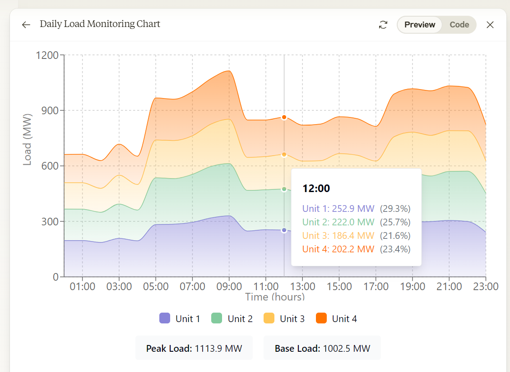
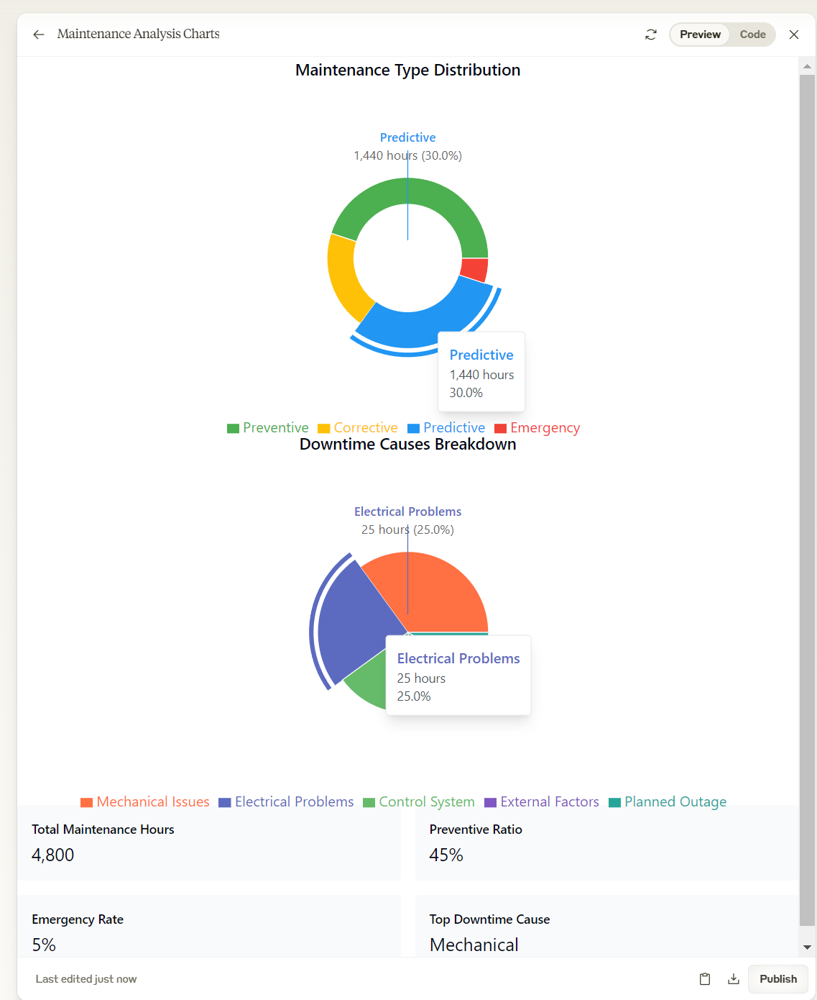

Membuat grafik area untuk memvisualisasikan pola beban harian dan kontribusi setiap unit pembangkit.
Tolong buatkan visualisasi area chart untuk monitoring beban harian dengan spesifikasi berikut:
Data yang ditampilkan:
- Beban total sistem (MW)
- Kontribusi setiap unit pembangkit
- Data per jam selama 24 jam
- Base load vs peak load
Elemen visual:
- Stacked area untuk kontribusi unit
- Line overlay untuk total beban
- Sumbu X: Waktu (jam)
- Sumbu Y: Beban (MW)
- Area fill dengan gradien atau pattern
- Grid untuk pembacaan nilai
Styling:
- Warna berbeda untuk setiap unit
- Opacity yang sesuai untuk overlapping areas
- Smooth curves untuk transisi
- Highlighted peak periods
Interaktivitas:
- Hover untuk detail kontribusi per unit
- Click untuk isolate unit tertentu
- Zoom untuk analisis periode spesifik
- Toggle visibility per unit
Struktur Prompt:
- Definisi data temporal
- Spesifikasi layout stacked
- Styling untuk readability
- Interaktivitas untuk analisis detail
Sample Data (daily_load.csv):
time,unit1,unit2,unit3,unit4,total_load
00:00,250,220,180,200,850
01:00,245,215,175,195,830
02:00,240,210,170,190,810
03:00,235,205,165,185,790
[...lanjutkan untuk 24 jam]
⬇️
Unduh resource studi kasus
Gunakan color scheme yang memudahkan identifikasi base load vs peak load units.

Membuat diagram lingkaran untuk menganalisis distribusi waktu pemeliharaan dan penyebab downtime.
Tolong buatkan visualisasi pie chart untuk analisis pemeliharaan dengan spesifikasi berikut:
Data yang ditampilkan:
- Distribusi jenis pemeliharaan:
* Preventive Maintenance
* Corrective Maintenance
* Predictive Maintenance
* Emergency Repair
- Breakdown penyebab downtime:
* Mechanical Issues
* Electrical Problems
* Control System
* External Factors
* Planned Outage
Elemen visual:
- Donut chart untuk jenis pemeliharaan
- Pie chart untuk penyebab downtime
- Persentase dan nilai absolut
- Labels dengan callout lines
- Legend dengan total values
Styling:
- Color scheme yang intuitif
- Pattern fills untuk aksesibilitas
- Emphasis pada nilai signifikan
- Clean label placement
Interaktivitas:
- Hover untuk detail
- Click untuk explode segment
- Rotation untuk better viewing
- Filter berdasarkan periode
Struktur Prompt:
- Kategorisasi data yang jelas
- Multiple chart layout
- Label dan annotation specs
- Interaksi untuk eksplorasi data
Sample Data (maintenance_analysis.csv):
maintenance_type,hours,percentage
Preventive,2160,45
Corrective,960,20
Predictive,1440,30
Emergency,240,5
downtime_cause,hours,percentage
Mechanical,720,30
Electrical,480,20
Control,360,15
External,240,10
Planned,600,25
⬇️
Unduh resource studi kasus
⬇️
Unduh resource studi kasus
Tambahkan drill-down capability untuk analisis sub-kategori jika diperlukan.
